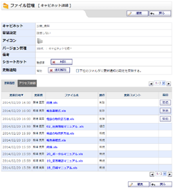
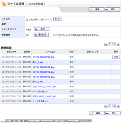
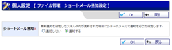
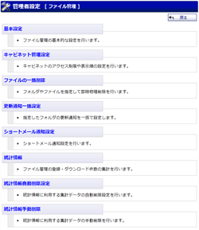
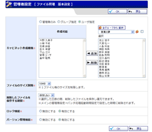
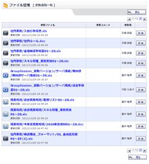
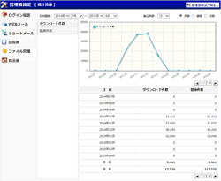

|
キャビネット一覧
キャビネットを一覧表示します。 |
|---|---|
|  |
キャビネット詳細 更新履歴
・
キャビネット詳細 アクセス制御
キャビネットの詳細画面です。 キャビネットの更新履歴とアクセス制御を確認することができます。 |
 |
キャビネット登録
・
キャビネット編集
・
キャビネット登録確認
・
キャビネット編集確認
キャビネットの登録・編集、登録確認・編集確認の画面です。 |
 |
フォルダ情報
フォルダ情報を確認する画面です。 |
|  |
フォルダ詳細
フォルダ詳細情報を確認する画面です。 |
 |
フォルダ登録
・
フォルダ編集
・
フォルダ登録確認
・
フォルダ編集確認
フォルダの登録・編集、登録確認・編集確認の画面です。 |
 |
ファイル詳細
ファイル詳細情報を確認する画面です。 |
 |
ファイル追加
・
ファイル編集
・
ファイル追加確認
・
ファイル編集確認
ファイルの追加・編集、登録確認・編集確認の画面です。 |
 |
フォルダ移動
・
ファイル移動
・
フォルダ･ファイル一括移動
・
フォルダ移動確認
・
ファイル移動確認
・
フォルダ･ファイル一括移動確認
フォルダ・ファイルの移動を行う画面です。 |
 |
ファイル詳細検索
ファイルの詳細検索を行います。 キャビネットに登録されているファイル、フォルダを検索することができます。 |
 |
個人設定メニュー
ファイル管理の個人設定を行うことができます。 メイン画面への表示設定やショートメール通知設定を行うことができます。 |
 |
表示設定
・
表示設定確認
メイン画面への表示有無や履歴の表示件数を設定します。 |
|  |
ショートメール通知設定
・
ショートメール通知設定確認
更新通知をショートメールで通知する設定を行います。 |
|  |
管理者設定メニュー
ファイル管理の管理者設定を行うことができます。 ファイル管理の基本設定、キャビネット管理設定、ファイル一括削除を行うことができます。 |
|  |
基本設定
・
基本設定確認
ファイル管理の基本的な設定を行います。 |
 |
キャビネット管理設定
キャビネットのアクセス制限や表示順の設定を行います。 |
 |
ファイルの一括削除
・
ファイルの一括削除確認
フォルダやファイルを指定して即時物理削除を行います。 |
|  |
更新通知一覧
ファイルの更新一覧画面を表示します。 |
 |
管理者 ショートメール通知設定
・
ショートメール通知設定確認
更新通知をショートメールで通知する設定を行います。 |
|  |
統計情報
ファイル管理の統計情報を確認することができます。 |